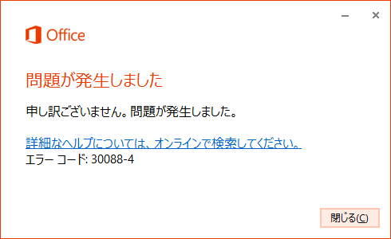
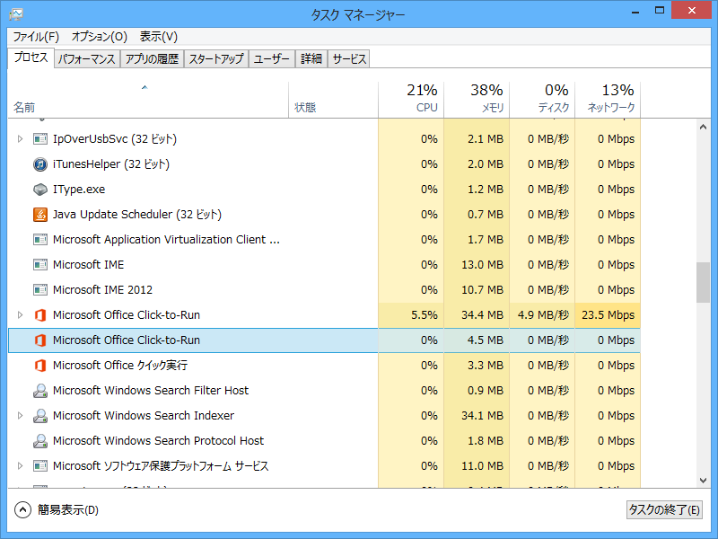
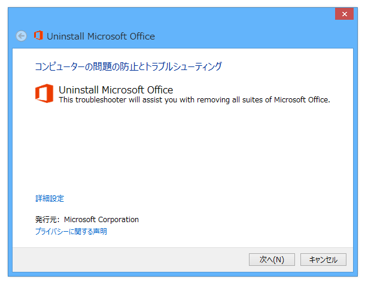
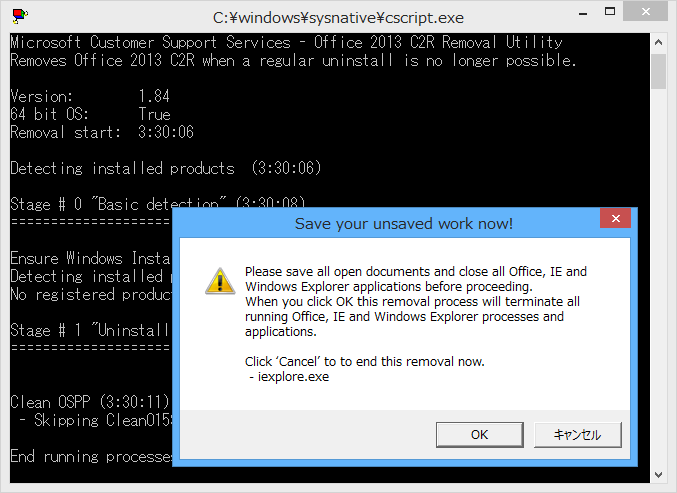
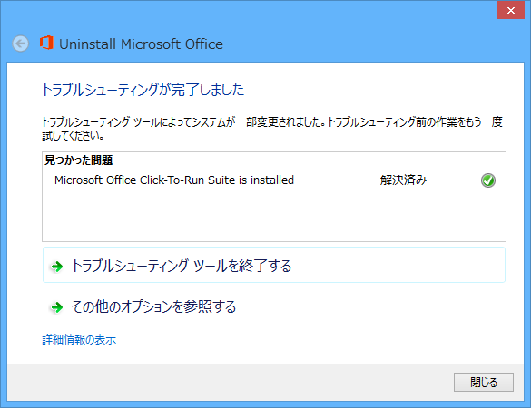
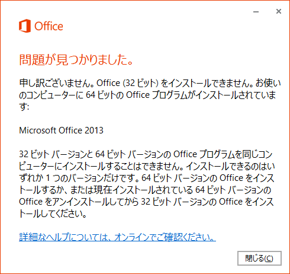
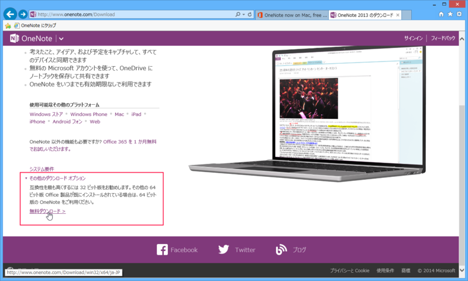
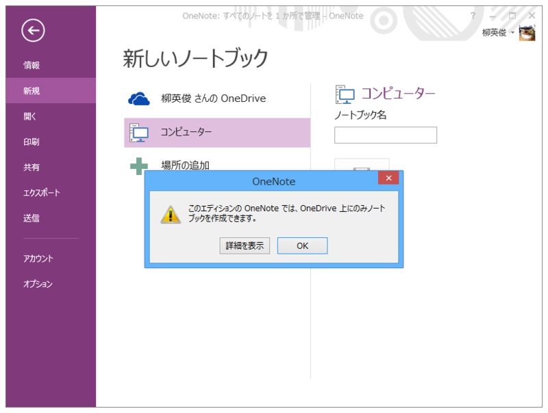

エラーコード 30088-4 により無償版 OneNote がインストールできない
公開日：

正規版 Microsoft Office 2013 Home and Bussiness をアンインストールして、無償版の OneNote を試すことにした（無償版の機能制限などを調査するため）。そこでこのようなエラーに遭遇。もしかしたら過去に試用版 Office を利用していて、今回無償版の OneNote を使いたいといったユーザーは遭遇するかもしれない。
解決策: Microsoft Office 2013 を「完全に」アンインストールする

念のため、Microsoft Office Click-to-Run というプロセスが残っているときは事前に殺しておく。この処理は要らないかもしれないが、手元の環境ではこのプロセスが残っているとどうも Fix it の実行にやたら時間がかかるみたい。

次に How to uninstall Office 2013 or Office 365 で Microsoft Fix it を入手し、実行する。

クリーンナップ処理は時間がかかるが、コマンドプロンプトが現れればちゃんと動いているので心配しなくてもよい。途中、Windows Explorer、Internet Explorer、Microsoft Office を閉じるよという警告がでるので、［OK］を押しておく。

完了。
そのほかに遭遇しそうな問題

一番目につくダウンロードリンクから落とせるのは 32bit 版 OneNote なので、すでに 64bit版 Office がインストールされている場合は共存させることができない。なお、問題になるのは Office が 32bit 版かどうかで、Windows は関係ない。
| Windows x86 | Windows x64 | |
| Office x86 | 32bit OneNote が利用可能 | 32bit OneNote が利用可能 |
| Office x64 | （不可能な組み合わせ） | 64bit OneNote が利用可能 |
Microsoft は互換性の問題で基本的に 32bit 版 Office を推奨している。

64bit 版の無償 OneNote は“その他のダウンロード オプション”というセクションから入手できる。
おまけ: 無償版の OneNote の制限
「有償版買ってしまった人はどうするの？」「無償版があるから有償版は買うな！」という話もあるけど、厳密には無償版と有償版は違っていて、さまざまな機能制限があるみたい。

一番の違いは、無償版ではローカル .one ファイルを OneDrive フォルダ以外に保存できないこと。要は「無償版 OneNote ≒ OneDrive（OneNote Online）のクライアント」という位置付けみたい。 クラウド連携しないなら、有償版をどうぞ（業務利用ではクラウド連携が禁止されていることも少なくないと思う）。
あと、
OneNote 2013デスクトップ版は、これまで有償で、単体では1万円以上していたが、有償版には、SharePointサポート、バージョン履歴、Outlook統合といった機能が付加価値として提供される。無償版は広告表示や期間制限などはないが、学校および個人の利用向けとされており、業務(商用)では利用できない。また、法人向けセキュアストレージであるOneNote for Businessや、SharePoint onlineへの保存、バージョン履歴の記録はできないため、同社では「法人向けには、Office Professional Plus 2013、Office 365 ProPlusに含まれるOneNoteをお勧めいたします」としている。
なのだそうだ。Microsoft Office のライセンスはなんか複雑で面倒くさいな。